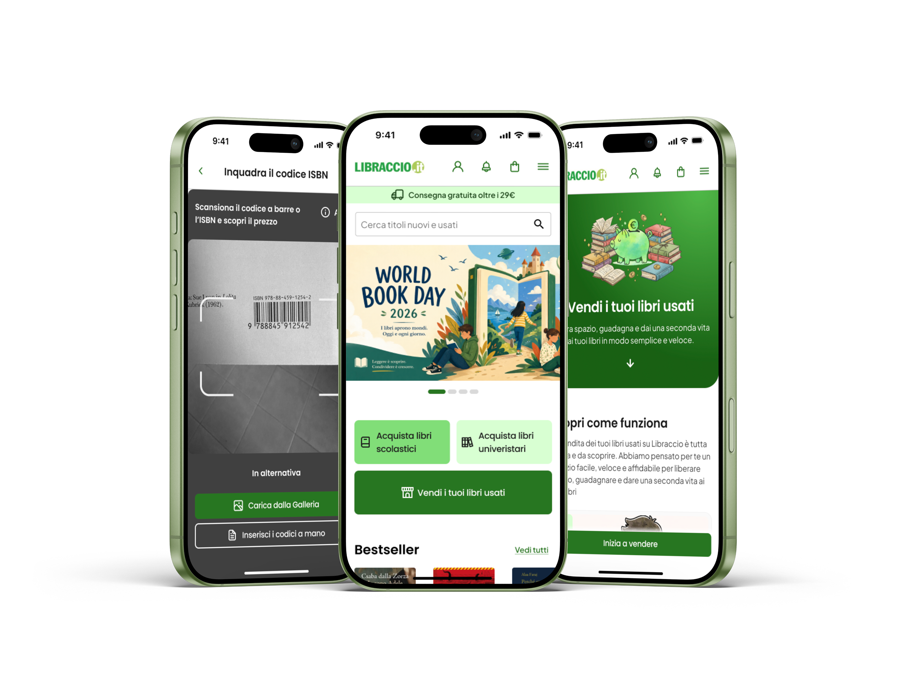
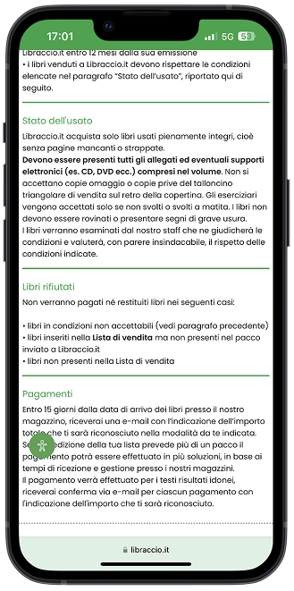
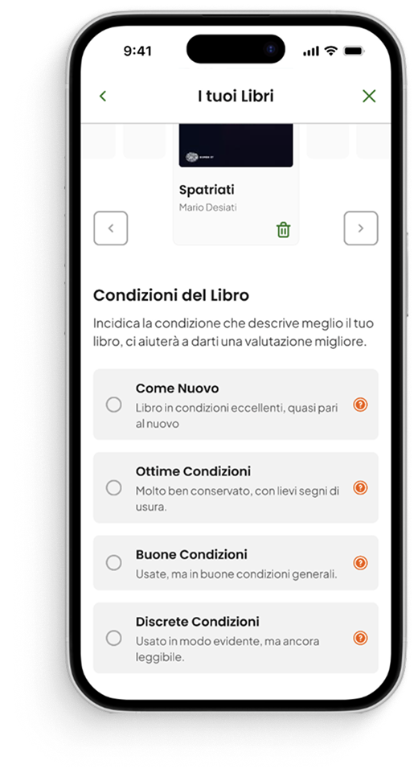
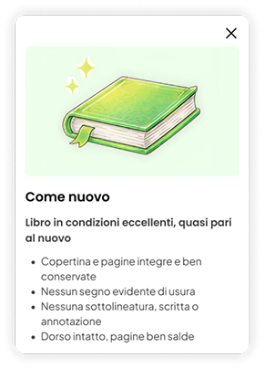
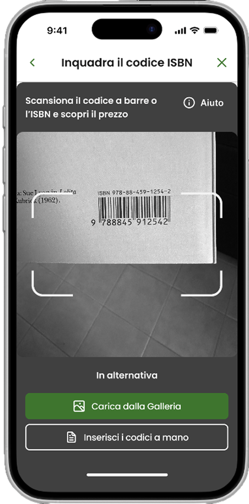

Redesigning trust in Libraccio's second hand selling experience

Libraccio.it is one of Italy's leading second-hand book platforms. Users can sell their used books directly to Libraccio, who evaluates, buys, and resells them. In return, sellers receive cash or store credit to spend on the platform.
The brief was about usability. The real problem was something else.
Users didn't struggle to use the platform.
They didn't trust it.
The brief: make the selling flow simpler and make Libraccio credit feel like a real reward.
What we found instead: trust was broken before usability even mattered.
Black Box Syndrome
Sellers felt trapped, not valued
“They keep them either way. So why would I trust their valuation?”
— Recurring sentiment across user interviews
No transparency before the sale
Valuation criteria were never communicated upfront. Users had no idea how their books would be assessed or what would determine the final offer.
Hidden rejection risk
The possibility that books could be rejected after shipping was buried in the flow, and rejected books were retained by Libraccio with no clear return option.
A suspicion that couldn't be ignored
Rejected books weren't returned to the seller. Libraccio kept them, with no clear justification in the flow. The result: a widespread suspicion that books were retained even when perfectly resalable.

Users felt the system was designed against them, not for them. The redesign wasn't about fixing a flow: it was about rebuilding a relationship.
From insight to direction: four principles to earn trust back.
Every design decision was driven by one goal: give users visibility, predictability, and control over a process they had learned not to trust.
Transparency
Show valuation criteria before the user commits to anything.
Control
Give users real decision-making power, including over rejected books.
Simplicity
Remove cognitive friction at every step of the flow.
Context
Deliver the right information at the right moment in the journey.
Five targeted interventions.
The redesign is mobile-first and built around five interventions: each one directly addressing a specific trust breakdown identified in research.
Upfront condition declaration
Users describe their books' condition before submitting. This makes the valuation transparent and predictable, removing the “black box” effect.


Fast ISBN scanning
Reduces technical friction in book entry, lowering the effort barrier to start selling: scan the barcode and the price surfaces instantly.

End-to-end tracking
A single hub where users follow every stage: shipping, evaluation, and final outcome. Nothing disappears, nothing is invisible.

Explicit rejection management
If a book is rejected, the user chooses what happens next: recycling, donation, or return. No book is ever retained without explicit consent. This is the single decision that dismantles the “black box.”

Credit enhancement & Wallet
A dedicated space for Libraccio credit, with a +5% bonus for circular-economy choices, makes the credit feel like a real reward, not a consolation prize.

Beyond the five interventions: the full flow, mapped end to end.
The five interventions above are the highlights. Behind them sits a complete service map covering every path a seller can take, from first click to payout, including the edge cases.
Access
- Entry point Homepage click straight into the selling flow, one step.
- Trust before commitment Reviews, trust score and guarantee seal surfaced before the user starts.
Book entry
- Adding books ISBN scan via camera, webcam, or QR hand-off to mobile, plus manual entry.
- €15 minimum Checkout unlocks only above threshold; price updates live as books are added.
- Pre-evaluation Automatic prediction of acceptance and price per book, before shipping.
Sale setup
- Registration Email, Google or Facebook, with explicit marketing consent.
- Shipping method Home pickup, bookshop drop-off, or locker.
- Payout method Store credit (+5% bonus, free shipping), bank transfer (€1.90), PayPal (€0.90).
Shipping & tracking
- Confirmation Email with a unique order code and weight-based shipping instructions.
- No printing Digital label only, for every shipping method.
- Progress bar Every stage after drop-off stays visible.
Evaluation
- Outcome Shown directly on the user's profile.
- Rejection, explained Every rejected book comes with its reason, before any other choice.
- What happens next Recycle, donate (recipient disclosed), or paid return.
Close
- Payout Credited, confirmed on profile and by email.
- Feedback Requested right after the payout.
- What's next Personalized recommendations, with seasonal logic (e.g. textbooks in August–September).
Process overview
The project was developed as a team.
The phases I owned independently are noted in each description.
Brief analysis
Defining the project scope: simplify the C2B selling flow and increase the perceived value of Libraccio credit.
As-is analysis
Mapping the existing selling experience to identify friction points, drop-off moments, and trust breakdowns across the flow.
Desk research
Digital observation: analyzing user-generated content, reviews, and forum discussions about the Libraccio selling experience.
Benchmark: mapping competitor C2B flows to identify industry standards and gaps.
User interviews
9 semi-structured interviews with sellers to explore motivations, pain points, and emotional responses to the valuation process.
I structured the interviews and conducted part of them.
Survey + analysis
161-response survey to validate qualitative findings at scale.
I designed the survey structure and analyzed the data.
Insights + HMW
Synthesis of research findings into actionable insights. HMW questions to reframe problems as design opportunities.
Wireframing
Low-fidelity flows for the full selling journey.
I owned the landing page and onboarding guide flows.
UI Design
Design system and final interface implementation.
I contributed to building styles, variables, and components in Figma. I designed the landing page and onboarding guide end to end.
Prototyping
Interactive prototype of the full flow.
I built and connected the prototype for the landing page and onboarding guide.
What I Learned
This project taught me that UX friction isn't always a usability problem: sometimes it's a trust problem. And trust requires a different design language: one built on transparency, predictability, and control rather than efficiency alone.
The most interesting design decision wasn't a UI choice. It was reframing the brief entirely.
See the redesign in action
Scan to open prototype